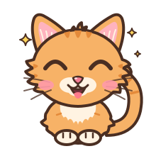

Zarata-neurgailu adeitsua familia osoarentzat
Quiet Buddy-k zure Android telefonoa zarata-neurgailu leun bihurtzen du. Pertsonaia jator batek gela zein ozen dagoen erakusten du, eta denbora lasaiak lagun eta osagarri berriak ekartzen ditu. Ez da ezer grabatzen ez inora bidaltzen.
Lagunek zein ozen dagoen erakusten du
Laguni aurpegia gelako zaratarekin aldatzen zaio. Hauek dira aldarte bakoitzaren esanahiak aurrez ezarritako mugekin.
-
Pozik
55 dB baino gutxiago
Gela lasai eta epela dago.
-
Ondo
55 eta 65 dB artean
Etxeko soinu normalak.
-
Kezkatuta
65 eta 75 dB artean
Bizitsua hasten ari da hemen.
-
Triste
75 eta 85 dB artean
Oso ozen dago. Sosegatzeko garaia da.
-
Belarriak estaltzen
85 dB edo gehiago
Oso ozen dago. Lagunek atsedena behar du.
Zarata handitu ahala, pantailaren atzealdea ere iluntzen da, kolore lasaitik anbar, koral eta gorrira, gelaren beste muturretik ere ikusteko moduan. Entzutea eteten denean, Lagun lo geratzen da.
Ezagutu pertsonaiak
Denok Lagunekin hasten gara. Besteak gelak minutu lasaiak biltzen dituen heinean iristen dira. Bakoitzak bere aldarte, ahots, soinu eta trikimailuak ditu.
-

Lagun
Hasieratik
Lagun txiki hori eta irribarretsua. Zarata gehiegi dagoenean, belarriak estaltzen ditu.
-

Mixi
120 minutu lasairekin
Katakume laranja bat. Zarata gehiegirekin, ile guztia harrotzen zaio.
-

Txito
800 minutu lasairekin
Bere urmaelean flotatzen duen gomazko ahatetxoa. Zarata gehiegi dagoenean, burua hegoekin estaltzen du.
-

Astro
1.700 minutu lasairekin
Bultzagailu baten gainean hegan dabilen robot txikia. Azkar laztantzen baduzu, biraka egiten du, salto egiten du eta gelari buelta ematen dio hegan.
-

Mari Domingi
Gabonetako gonbidatua: abenduaren 1etik 26ra
Gabonetan opariak dakartzan euskal pertsonaia, bere sagar-saskiarekin. Abenduan bakarrik lor daiteke, eta behin lortuta, betiko geratzen da.
Denbora lasaiak saria du
Minutu lasaiak
Gelako minutu lasai bakoitzak balio du. Hasieran ikusten da zenbat falta den hurrengo saria lortzeko, adibidez «20 min Mixi ezagutzeko».
Zaratak badu prezioa
Zarata handiko uneek zor txiki bat uzten dute, eta denbora lasaiak hori ordaintzen du lehenik. Oihu labur batek gutxi kostatzen du; behin eta berriz oihu egiteak askoz gehiago. Irabazitakoa ez da inoiz galtzen.
Koloreak eta osagarriak
Desblokeatu kolore berriak eta janzteko gauzak: eguzkitako betaurrekoak, kapela altua, txintxirrinadun lepokoa, igeriketako betaurrekoak edo helize-txapela. Konbinatu itzazu Pertsonaiak fitxan.
Laztandu zure laguna
Gela lasai dagoenean, ukitu pertsonaia: barre egiten du, jauzi egiten du eta bihotzak botatzen ditu. Ukitu azkarrek trikimailuak desblokeatzen dituzte. Zarata handia dagoenean, kulunka txiki bat besterik ez; zaratak ez du inoiz saririk.
Nola funtzionatzen du
-
Instalatu aplikazioa
Quiet Buddy doakoa da, eta Android 10 edo berriagoekin funtzionatzen du. Deskargatu azken proba-bertsioa argitalpen-orritik.
-
Jarri telefonoa gelan
Telefonoak ozentasuna bakarrik entzuten du. Lagunek 3 segundu inguru itxaroten du aldatu baino lehen, dardarka ez dezan.
-
Egokitu zure etxera
Aukeratu zarata-muga bat eta pertsonaia bat, eta begiratu historia, eguna nola joan den entzuteko.
Familientzat egina
- Zarata-mugak: Isiltasun ordua, Egunerokoa edo Jolasaldia. Gurasoek une bakoitzari egokitzen zaiona aukeratzen dute.
- Pantaila osoa: Ezkutatu dena pertsonaia izan ezik, telefonoa edo tableta apal batean uzteko. Horizontalean eta tabletetan ere badabil.
- Soinu-abisuak: Pertsonaiak soinu barregarriak egiten ditu zarata handia dagoenean. Multimedia-bolumena erabiltzen dute, eta desaktiba daitezke.
- Atzeko planoan dabil: Jarraitu entzuten pantaila itzalita. Jakinarazpen batek aldartea erakusten du, eta edozein unetan eten dezakezu. Edo mantendu pantaila piztuta aplikazioa irekita dagoen bitartean.
- Historia: Ikusi zarata orduz ordu azken 7 egunetan, eta noiz izan zen une ozenena.
- Hiru hizkuntza: Ingelesa, gaztelania eta euskara. Aplikazioak telefonoaren hizkuntza jarraitzen du, edo Ezarpenetan aukera dezakezu.
Zure pribatutasuna lehenik dago
- Quiet Buddy-k ozentasun maila bakarrik neurtzen du. Ez du audiorik grabatzen inoiz.
- Ez da audiorik gordetzen, eta ez da ezer telefonotik ateratzen.
- Aplikazioak ez du internet baimenik, ez konturik eta ez iragarkirik.
- Xehetasun guztiak pribatutasun orrialdean irakur ditzakezu.
Zehaztasunari buruz
Telefonoen mikrofonoak ez dira ziurtatutako soinu-neurgailuak. Irakurketak gutxi gorabeherakoak dira, eta Ezarpenetan kalibra daitezke.